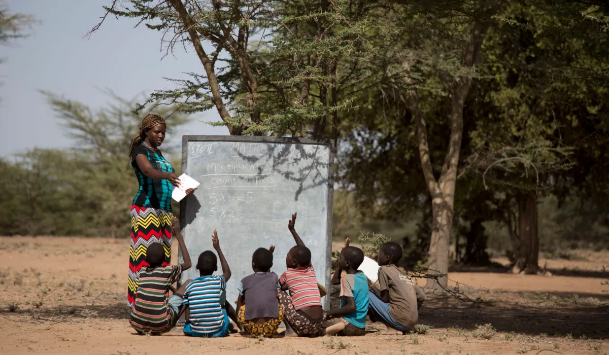

Closing the climate literacy gap
Many have heard about climate change, but real understanding drives action. We empower youth and marginalized communities with practical climate science — turning awareness into meaningful change.
Join the movement
From awareness to real solutions
We simplify climate science and teach it at grassroots level, ensuring lasting impact.
Know the causes
Greenhouse gases, deforestation, and local drivers — demystifying the science behind global warming in relatable ways.
Understand impacts
From extreme weather to food security, we connect global shifts to community realities and vulnerabilities.
Practical solutions
Sustainable habits, tree planting, renewable energy choices & advocacy — action steps that everyone can adopt.
Strengthening climate literacy where it matters most
Our project bridges the gap between awareness and real knowledge, especially among young people and marginalized communities. Participants not only learn but also become multipliers, sharing sustainable habits across families and neighborhoods.
- Youth-led workshops & peer education
- Customized resources for local contexts
- Measurable increase in climate confident citizens
Rooted in youth & marginalized communities
Empowering those often left out of climate conversations — because real resilience is built together.
Grassroots training
Interactive sessions in schools, local centers, and rural areas — delivered in accessible language.
Youth ambassadors
We train young leaders to cascade climate literacy, building a network of informed changemakers.
Community-led action
From urban gardens to waste management, we support practical steps that protect the environment.
🌿 Term members & leadership
Meet the passionate educators, advocates, and researchers driving climate literacy forward.
Ms Taonga Zulu
Taonga Zulu is a Mass Communication and Public Relations graduate committed to leveraging strategic communication to drive climate literacy and community transformation

Dr. Sofia Ramirez
Data-driven strategist measuring literacy outcomes. Advocates for inclusive climate policy in urban & rural settings.
Lenord Siakunkuma
Manages program design and implementation, coordinating activities and ensuring that project deliverables are executed effectively.
Taonga Sakala
Responsible for tracking project performance, evaluating outcomes, maintaining accountability, and managing financial records and reporting. .
Term members serve rotating 2-year terms — bringing fresh energy and accountability to climate action.
Turning knowledge into everyday habits
Our curriculum includes simple, actionable steps: reducing food waste, energy conservation, water harvesting, and supporting local biodiversity. Participants then share this knowledge, creating a ripple effect across the community.
1 trained person → 10 households inspired → informed community
Help build a climate-aware generation
Be part of the movement that brings climate literacy to every doorstep. Together we educate, empower, and act.
Become a partner / volunteerSchools, NGOs, local groups — let's collaborate.